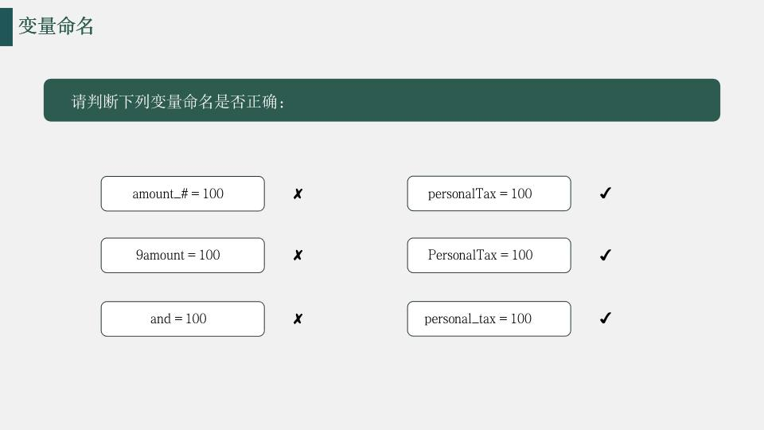

第 1 页 · 对象是python语言中最基本的概念，在python中处理的一切都是对象。python中有许多内置对象可供编程者使用，内
对象是python语言中最基本的概念，在python中处理的一切都是对象。python中有许多内置对象可供编程者使用，内置对象可直接使用，如数字、字符串、列表等；
非内置对象需要导入模块才能使用，如正弦函数sin(x)，随机数产生函数random( )等。
2.1 Python常用内置对象
第 2 页 · 2.1 Python常用内置对象
| 对象类型 | 类型名称 | 示例 | 简要说明 |
| 数字 | int， float， complex | 1234， 3.14， 1.3e5， 3+4j | 数字大小没有限制，内置支持复数及其运算 |
| 字符串 | str | 'swfu'， "I'm student"， '''Python'''， r'abc'， R'bcd' | 使用单引号、双引号、三引号作为定界符，以字母r或R引导的表示原始字符串 |
| 字节串 | bytes | b’hello world’ | 以字母b引导，可以使用单引号、双引号、三引号作为定界符 |
| 列表 | list | [1， 2， 3]，['a'， 'b'， ['c'， 2]] | 所有元素放在一对方括号中，元素之间使用逗号分隔，其中的元素可以是任意类型 |
| 字典 | dict | {1:'food' ，2:'taste'， 3:'import'} | 所有元素放在一对大括号中，元素之间使用逗号分隔，元素形式为“键:值” |
| 元组 | tuple | (2， -5， 6)， (3，) | 所有元素放在一对圆括号中，元素之间使用逗号分隔，不可变， 如果元组中只有一个元素的话，后面的逗号不能省略 |
| 集合 | set / frozenset | {'a'， 'b'， 'c'} | 所有元素放在一对大括号中，元素之间使用逗号分隔，元素不允许重复;另外，set是可变的，而frozenset是不可变的 |
2.1 Python常用内置对象
字典是键值存储的一个例子，在Python中也称为映射。它允许通过引用键来存储和检索元素。由于字典是按键引用的，所以查找速度非常快。由于它们主要用于按键去索引所有的值，所以不进行排序。
第 3 页 · 续表
| 对象类型 | 类型名称 | 示例 | 简要说明 |
| 布尔型 | bool | True / False | 逻辑值，关系运算符、成员测试运算符、同一性测试运算符组成的表达式的值一般为True或False |
| 空类型 | NoneType | None | 空值 |
| 异常 | Exception、ValueError、TypeError | Python内置了大量异常类，分别对应不同类型的异常 | |
| 文件 | f = open('data.dat'， 'rb') | open是Python内置函数，使用指定的模式打开文件，返回文件对象 | |
| 其他可迭代对象 | 生成器对象、range对象、zip对象、enumerate对象、map对象、filter对象等等 | 具有惰性求值的特点，除range对象之外，其他对象中的元素只能查看一次 | |
| 编程单元 | 函数（使用def定义） / 类（使用class定义） / 模块（类型为module） | 类和函数都属于可调用对象，模块用来集中存放函数、类、常量或其他对象 |
续表
2.1 Python常用内置对象
第 4 页 · 在Python中，不需要事先声明变量名及其类型，直接赋值即可创建各种类型的对象变量。这一点适用于Python任意类型的对
在Python中，不需要事先声明变量名及其类型，直接赋值即可创建各种类型的对象变量。这一点适用于Python任意类型的对象。
>>> x = 3
创建了整型变量x，并赋值为3
>>> x = 'Hello world.'
创建了字符串变量x，并赋值为'Hello world.'。
凭空出现一个整型变量x
新的字符串变量，再也不是原来的x了
2.1.1 Python变量
第 5 页 · Python属于强类型编程语言，Python解释器会根据赋值或运算来自动推断变量类型。
Python属于强类型编程语言，Python解释器会根据赋值或运算来自动推断变量类型。
Python还是一种动态类型语言，变量的类型也是可以随时变化的。
>>> x = 3
>>> type(x)
<class 'int'>
>>> x = 'Hello world.'
>>> type(x) #查看变量类型
<class 'str'>
>>> x = [1，2，3]
>>> type(x)
<class 'list'>
2.1.1 Python变量
第 6 页 · 如果变量出现在赋值运算符或复合赋值运算符（例如+=、*=等等）的左边则表示创建变量或修改变量的值，否则表示引用该变量的值
如果变量出现在赋值运算符或复合赋值运算符（例如+=、*=等等）的左边则表示创建变量或修改变量的值，否则表示引用该变量的值。
>>> x = 3 #创建整型变量
>>> x**2
9
>>> x += 6 #引用变量值
>>> x #读取变量值并输出显示
9
>>> x = [1，2，3] #创建列表对象
>>> x[1] = 5 #修改列表元素值
>>> x #输出显示整个列表
[1， 5， 3]
>>> x[2] #输出显示列表指定元素
3
2.1.1 Python变量
第 7 页 · Python采用基于值的内存管理方式，如果为不同变量赋值为相同值，这个值在内存中只保存一份，多个变量指向同一个值的内存空
Python采用基于值的内存管理方式，如果为不同变量赋值为相同值，这个值在内存中只保存一份，多个变量指向同一个值的内存空间首地址，这样可以减少内存空间的占用，提高内存利用率。
Python启动时，会对[-5， 256]区间的整数进行缓存。也就是说，如果多个变量的值相等且介于[-5， 256]区间内，那么这些变量共用同一个值的内存空间。
对于区间[-5， 256]区间之外的整数，同一个程序中或交互模式下，同一个语句中的相同值不同名变量会共用同一个内存空间，不同程序或交互模式下不同语句不遵守这个约定。
2.1.1 Python变量
第 8 页 · 在Python中，允许多个变量引用同一个值，例如：
在Python中，允许多个变量引用同一个值，例如：
>>> x = 3
>>> id(x)
1786684560
>>> y = x
>>> id(y)
1786684560
然而，当为其中一个变量修改值以后，其内存地址将会变化，但这并不影响另一个变量，例如接着上面的代码再继续执行下面的代码：
>>> x += 6
>>> id(x)
1786684752
>>> y
3
>>> id(y)
1786684560
2.1.1 Python变量
第 9 页 · 2.1.1 Python变量
2.1.1 Python变量
>>> x = -6
>>> y = -6
>>> id(x)==id(y)
False
>>> x = -5
>>> y = -5
>>> id(x) == id(y)
True
>>> x = 255
>>> y = 255
>>> id(x) == id(y)
True
>>> x = 256
>>> y = 256
>>> id(x) == id(y)
True
>>> x = 257
>>> y = 257
>>> id(x) == id(y)
False
>>> x = 3.0
>>> y = 3.0
>>> id(x) == id(y)
False
>>> x， y = 300000， 300000
>>> id(x) == id(y)
True
第 10 页 · 字符串和元组属于不可变序列，不能通过下标的方式来修改其中的元素值，试图修改元组中元素的值时会抛出异常。
字符串和元组属于不可变序列，不能通过下标的方式来修改其中的元素值，试图修改元组中元素的值时会抛出异常。
>>> x = (1，2，3)
>>> x
(1， 2， 3)
>>> x[1] = 5
Traceback (most recent call last):
File "<pyshell#7>"， line 1， in <module>
x[1] = 5
TypeError: 'tuple' object does not support item assignment
2.1.1 Python变量
第 11 页 · 在定义变量名的时候，需要注意以下问题：
在定义变量名的时候，需要注意以下问题：
变量名必须以字母、数字字或下划线组成，不能由数字开头，以下关键字不能在变量命名中使用；
。
2.1.1 Python变量
| and | False | if | for | def | with | assert |
| or | True | elif | while | lambda | try | async |
| not | from | else | break | return | except | await |
| is | import | None | continue | global | finally | pass |
| in | as | class | del | nonlocal | yield | raise |
第 12 页 · 在定义变量名的时候，需要注意以下问题：
在定义变量名的时候，需要注意以下问题：
变量名中不能有空格以及标点符号（括号、引号、逗号、斜线、反斜线、冒号、句号、问号等等）；
不能使用关键字作变量名，可以导入keyword模块后使用print(keyword.kwlist)查看所有Python关键字；
不建议使用系统内置的模块名、类型名或函数名以及已导入的模块名及其成员名作变量名，这将会改变其类型和含义，可以通过dir(__builtins__)查看所有内置模块、类型和函数；
变量名对英文字母的大小写敏感，例如student和Student是不同的变量。
2.1.1 Python变量
第 13 页 · 幻灯片

第 14 页 · 习题1
习题1
记录班级 3 名同学的考试信息：姓名，年龄，考试分数。
要求：
定义变量保存数据：
姓名："李明"，年龄：19，分数：86；
下面有 3 个错误变量名，请指出错误原因，并且改写为合法变量名：
9score = 86、score#stu =86、and = 19
使用type()分别打印 姓名、年龄、分数 三个变量的对象类型。
打印输出：学生：李明，年龄：19，考试分数：86
第 15 页 · 习题1
习题1
记录班级 3 名同学的考试信息：姓名，年龄，考试分数。
要求：
定义变量保存数据：姓名："李明"，年龄：19，分数：86；
使用type()分别打印 姓名、年龄、分数 三个变量的对象类型。
打印输出：学生：李明，年龄：19，考试分数：86
#1 定义变量
—— = "李明"
—— = 19
—— = 86
#2 打印类型
print(type(——))
print(type(——))
print(type(——))
print(f"学生：{——}，——：{——}，——：{——}")
第 16 页 · 在Python中，数字类型变量可以表示任意大小的数值。
在Python中，数字类型变量可以表示任意大小的数值。
>>> a=99999999999999999999999999999999
>>> a*a
9999999999999999999999999999999800000000000000000000000000000001
>>> a**3
999999999999999999999999999999970000000000000000000000000000000299999999999999999999999999999999
2.1.2 数字
第 17 页 · Python中的数值类型主要有整数、浮点数和复数。其中，整数类型可以分为：
Python中的数值类型主要有整数、浮点数和复数。其中，整数类型可以分为：
十进制整数，如，0、-1、9、123
十六进制整数，需要16个数字0、1、2、3、4、5、6、7、8、9、a、b、c、d、e、f来表示整数，必须以0x开头，如0x10、0xfa、0xabcdef
八进制整数，只需要8个数字0、1、2、3、4、5、6、7来表示整数，必须以0o开头，如0o35、0o11
二进制整数，只需要2个数字0、1来表示整数，必须以0b开头如，0b101、0b100
2.1.2 数字
第 18 页 · 浮点数又称小数
浮点数又称小数
15.0、0.37、-11.2、1.2e2、314.15e-2
2.1.2 数字
第 19 页 · Python内置支持复数类型。
Python内置支持复数类型。
>>> a = 3+4j
>>> b = 5+6j
>>> c = a+b
>>> c
(8+10j)
>>> c.real #查看复数实部
8.0
>>> c.imag #查看复数虚部
10.0
>>> a.conjugate() #返回共轭复数
(3-4j)
>>> a*b #复数乘法
(-9+38j)
>>> a/b #复数除法
(0.6393442622950819+0.03278688524590165j)
2.1.2 数字
第 20 页 · Python 3.6.x开始支持在数字中间位置使用单个下划线作为分隔来提高数字的可读性，类似于数学上使用逗号作为千位分隔
Python 3.6.x开始支持在数字中间位置使用单个下划线作为分隔来提高数字的可读性，类似于数学上使用逗号作为千位分隔符。
>>> 1_000_000
1000000
>>> 1_2_3_4
1234
>>> 1_2 + 3_4j
(12+34j)
>>> 1_2.3_45
12.345
2.1.2 数字
第 21 页 · 用单引号、双引号或三引号界定的符号系列称为字符串。
用单引号、双引号或三引号界定的符号系列称为字符串。
字符串属于不可变序列。
单引号、双引号、三单引号、三双引号可以互相嵌套，用来表示复杂字符串。
'abc'、'123'、'中国'、"Python"、'''Tom said， "Let's go"'''
空字符串表示为' '或 " " 。
三引号'''或"""表示的字符串可以换行，支持排版较为复杂的字符串；三引号还可以在程序中表示较长的注释。
'''三引号'''或"""表示的字符串可以换行
支持排版较为复杂的字符串；三引号还可以在程序中表示较长的注释'''
2.1.3 字符串
第 22 页 · 常用转义字符
常用转义字符
| 转义字符 | 含义 | 转义字符 | 含义 |
| \b | 退格，把光标移动到前一列位置 | \\ | 一个斜线\ |
| \f | 换页符 | \’ | 单引号’ |
| \n | 换行符 | \” | 双引号” |
| \r | 回车 | \ooo | 3位八进制数对应的字符 |
| \t | 水平制表符 | \xhh | 2位十六进制数对应的字符 |
| \v | 垂直制表符 | \uhhhh | 4位十六进制数表示的Unicode字符 |
2.1.3 字符串
第 23 页 · 字符串界定符前面加字母r或R表示原始字符串，其中的特殊字符不进行转义，但字符串的最后一个字符不能是\。原始字符串主要用于
字符串界定符前面加字母r或R表示原始字符串，其中的特殊字符不进行转义，但字符串的最后一个字符不能是\。原始字符串主要用于正则表达式、文件路径或者URL的场合。
>>> path = 'C:\Windows\notepad.exe'
>>> path #字符\n被转义为换行符
C:\Windows
otepad.exe
>>> path = r'C:\Windows\notepad.exe' #原始字符串，任何字符都不转义
>>> print(path)
C:\Windows\notepad.exe
2.1.3 字符串
第 24 页 · 练习2
练习2
打印如下内容：
使用转义字符\n打印两行文本：
一季度销售报表.xlsx
二季度销售报表.xlsx
直接写路径 file_path = 'C:\newfile\sale.xlsx' 会出现转义错误，请使用 ** 原始字符串 r''** 改写路径，打印正确的文件路径。
使用转义引号输出这句话：店长说："本月的'业绩统计'已经完成"。
#1 \n换行
print("一季度销售报表.xlsx——二季度销售报表.xlsx")
#2 原始字符串
file_path =——'C:\newfile\sale.xlsx'
print(file_path)
#3 转义引号
print(' —— ')